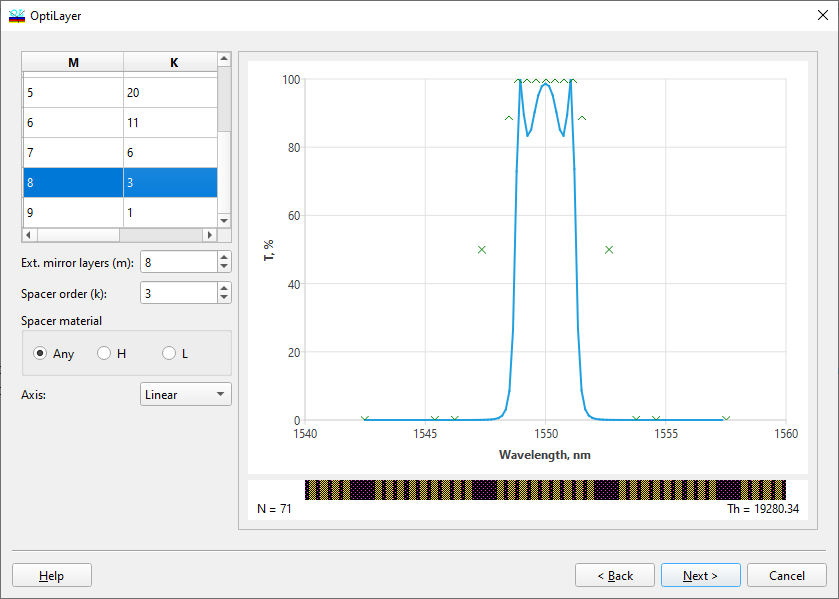

Filter Design - Prototype Specification
Filter Design - Prototype Specification

At the fourth step of the dialogue, you need to correct the design filter prototype. Each prototype is defined by two integer parameters: the number of external mirror layers (m) and the order of prototype spacer layers (k). You can choose these parameters from the table on the left side of the window or adjust them individually using the input fields below the table. The prototype’s transmittance and schematic are immediately displayed on the right side of the window. In the “Spacer material” field, the user can specify the type of spacer material. See also: